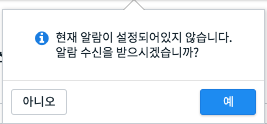
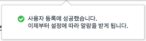
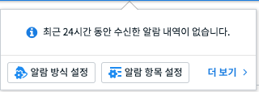
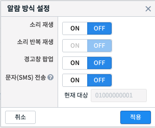
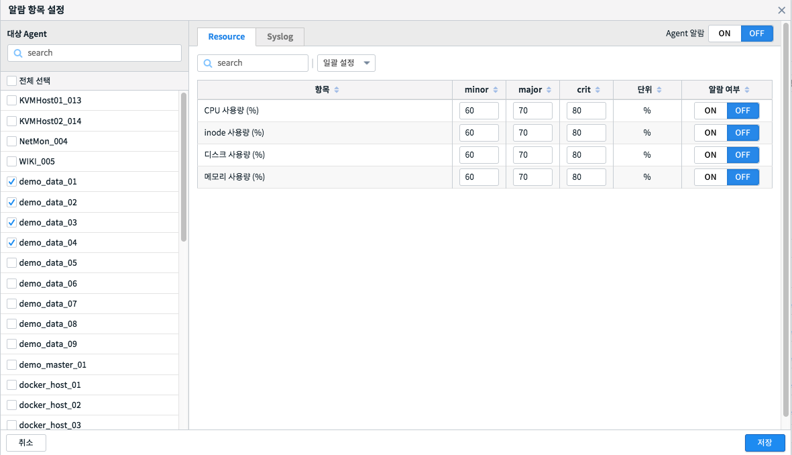
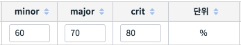
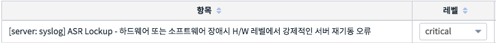

알람 수신 등록과 조건 설정¶
알람 기능을 사용하기 위해서는 먼저 알람 서비스에 사용자를 등록해야 하며, 알람을 수신 받기위해서는 항목별로 조건을 설정해야 합니다.
알람 수신 등록¶
기본적으로는 알람 서비스에 사용자가 등록되어 있지 않습니다. 화면 상단의 알람 아이콘을 클릭하면 아래와 같이 사용자 등록 여부를 물어보는 창이 나타납니다.
확인을 누르면 서비스에 현재 로그인한 사용자 계정을 등록합니다. 등록 과정이 끝나면 아래와 같이 메시지가 표시됩니다.
최근 24시간 알람 조회¶
최근 24시간 발생한 알람 중 가장 최근 5건을 조회하여 화면에 표시합니다. 알람 수신 등록 이후, 알람 아이콘을 클릭하면 최근 알람 내역을 보여주는 창이 나타납니다. 최근 24시간 발생한 알람 중 가장 최근 5건만을 보여주며, 더 많은 알람 내역을 보고 싶다면 ‘더 보기’ 버튼을 누르면 됩니다.
알람 방식 설정¶
알람을 수신하였을 때 사용자에게 표시하는 방식을 결정합니다. 방식으로는 소리 재생, 경고창 등이 있습니다.
소리 재생¶
알람을 수신했을 때 소리 재생 여부를 설정합니다. 소리는 알람 레벨에 따라 다릅니다. (알람 레벨은 minor, major, critical 세 가지가 있습니다.)
소리 반복 재생 항목을 ON으로 설정하면 알람을 끄기전까지 소리가 계속 반복 재생됩니다. 알람을 끄는 방법으로는 1) 알람 아이콘 클릭, 2) 경고창에서 닫기 버튼 클릭 등이 있습니다.
알람 항목 설정¶
알람을 수신받을 항목과 항목별로 임계치, 알람 레벨 등을 설정합니다. Agent 별, 알람 항목별로 ON/OFF 등의 설정이 가능합니다.
대상 AGENT 선택¶
알람 조건을 설정할 Agent를 선택합니다. 다중 선택이 가능합니다. Agent는 서버 혹은 스위치 장비입니다. 특정 Agent를 선택하면 오른쪽에 항목 설정 UI가 나타납니다.
RESOURCE 항목 설정¶
알람 조건 중 Resource 유형의 조건을 설정합니다. 알람 레벨(minor, major, critical)별로 임계치를 설정할 수 있습니다. Resource는 시스템 리소스(cpu, memory 등)를 말하며 각 알람 레벨별로 임계 수치를 지정할 수 있습니다.
해당 리소스 수치가 설정한 임계치를 넘으면 알람이 발생할 것입니다.
SYSLOG 항목 설정¶
알람 조건 중 Syslog 유형의 조건을 설정합니다. 조건 충족 시 발생하는 알람의 레벨(minor, major, critical)을 설정할 수 있습니다.
